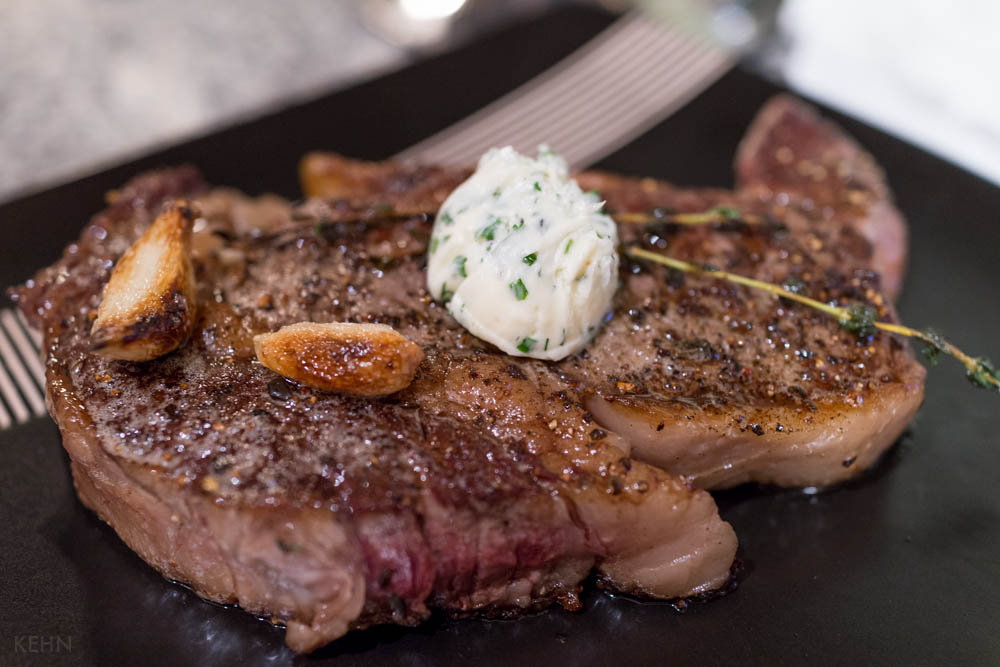

Pan-Seared Steak: Perfect for Any Occasion

Ingredients
- Ribeye steak (or your preferred cut): 1 (about 1-inch thick)
- Kosher salt: to taste
- Olive oil: 1 tablespoon
- Butter (optional): 1 tablespoon, knob for finishing
- Garlic cloves (optional): 2, smashed
- Fresh herbs (optional, such as rosemary or thyme): a few sprigs
Instructions
- Remove the steak from the refrigerator 30 minutes before cooking to bring it to room temperature. This helps ensure even cooking.
- Pat the steak dry with paper towels. Season generously with salt and freshly ground black pepper on both sides.
- Heat olive oil in a large, heavy-bottomed skillet over medium-high heat. Once the oil is hot and shimmering, carefully add the steak.
- Sear the steak undisturbed for 2-3 minutes per side, or until a nice golden brown crust forms. If using, add the butter, garlic cloves, and herbs to the pan during the last minute of searing, basting the steak with the melted butter occasionally.
- The internal temperature of the steak for desired doneness is: Rare (125°F), Medium-rare (135°F), Medium (145°F), Medium-well (155°F), Well-done (160°F). Use a meat thermometer to check the internal temperature for best results.
- Once the desired doneness is reached, transfer the steak to a plate and tent it loosely with foil. Let it rest for 5-10 minutes before slicing. This allows the juices to redistribute throughout the meat, resulting in a more tender and flavorful steak.
- Slice the steak against the grain and serve with your favorite sides. Enjoy your perfectly cooked pan-seared steak!